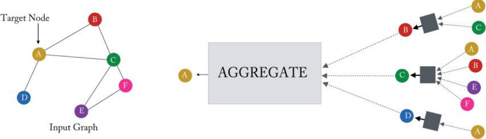

그래프 머신러닝: (5-1) GNN: 신경망 메시지 전달
(GRL) GNN: Neural Message Passing
Hamilton,W.L. Graph Representation Learning. 2020
이제 그래프 데이터에서 심층 신경망(deep neural network)을 정의하기 위한 프레임워크인 그래프 신경망(Grpah Neural Network, GNN) 형식을 살펴보자. 핵심 아이디어는 그래프의 구조와 모든 feature에 의존하는 노드의 표현을 생성하려는 것이다.
그래프 구조 데이터에 대한 복잡한 인코더를 개발할 때 가장 큰 문제는 일반적인 딥러닝 방법이 적용되지 않는다는 것이다. 예를 들어, CNN은 그리드 구조 입력(예: 이미지)에 대해서만 잘 정의되는 반면, RNN은 시퀀스(예: 텍스트)에 대해서만 잘 정의된다.
일반 그래프에 대한 심층 신경망을 정의하려면 새로운 종류의 딥 러닝 아키텍처를 정의해야 한다.
Neural Message Passing
GNN은 노드 간에 벡터 메시지(vector message)가 교환되고 신경망을 사용하여 업데이트되는 neural message passing(신경망 메시지 전달)을 사용한다[Gilmer et al., 2017].
이 챕터에서는 노드 피쳐(feauture)의 집합 \(\mathbf{X} \in \mathbb{R}^{d\times|\mathcal{V}|}\)와 함께, 입력 그래프 \(\mathcal{G}=(\mathcal{V},\mathcal{E})\)를 취하고, 이 정보를 이용해 노드 임베딩 \(\mathbf{z}_u, u \in \mathcal{V}\)을 생성하는 방법에 대해 다룬다.
또한, GNN 프레임워크가 subgraph와 전체 graph에 대한 임베딩을 생성하는데에 어떻게 사용되는지도 다룬다.
Overview
GNN에서 각 message-passing(메시지 전달)의 반복 중에 각 노드 \(u\in \mathcal{V}\)에 해당하는 은닉(hidden) 임베딩 \(\mathbf{h}_u^{(k)}\)는 \(u\)의 그래프 이웃 \(\mathcal{N}(u)\)에서 aggregated(집계된) 정보에 따라 업데이트된다.

Figure 5.1 in Hamilton,Graph Representation Learning. 2020: 단일 노드가 로컬 이웃의 메시지를 집계하는 방법
message-passing 업데이트는 다음과 같이 표현할 수 있다.
\[ \mathbf{h}_u^{(k+1)} = \text{UPDATE}^{(k)} ( \mathbf{h}_u^{(k)}, \text{AGGREGATE}^{(k)}(\{\mathbf{h}_v^{(k)}, \forall v \in \mathcal{N}(u)\})) = \text{UPDATE}^{(k)}( \mathbf{h}_u^{(k)}, \mathbf{m}_{\mathcal{N}(u)}^{(k)} ) \]
여기서 UPDATE와 AGGREGATE는 임의의 미분가능 함수(i.e. 신경망)이고, \(\mathbf{m}_{\mathcal{N}(u)}\)는 \(u\)의 그래프 이웃 \(\mathcal{N}(u)\)로부터 집계된 “메시지(message)” 벡터이다.
GNN의 각 반복 \(k\)에서 AGGREGATE 함수는 \(u\)의 그래프 이웃 \(\mathcal{N}(u)\)에 있는 노드의 임베딩 집합을 입력으로 받고, 이 집계된 이웃 정보를 기반으로 메시지 \(\mathbf{m}_{\mathcal{N}(u)}^{(k)}\)를 생성한다.
UPDATE 함수는 메시지 \(\mathbf{m}_{\mathcal{N}(u)}^{(k)}\)를 노드 \(u\)의 이전 임베딩 \(\mathbf{h}^{(k-1)}_u\)와 합쳐, 업데이트한다.
초기 임베딩 (\(k=0\))은 모든 노드의 입력 feature로 하며: \(\mathbf{h}_u^{(0)}=\mathbf{x}_u , \forall u \in \mathcal{V}\)
GNN 메시지 전달의 \(K\)번의 반복 후 각 노드에 대한 임베딩을 정의하기 위해 마지막 층의 출력을 사용한다: \(\mathbf{z}_u = \mathbf{h}_u^{(K)},\forall u \in \mathcal{V}\)
노드 피쳐(node features)
- 지난 포스트에서 논의된 shallow 임베딩 방법과 달리 GNN 프레임워크는 모델에 대한 입력으로 노드 피쳐 \(\mathbf{x}_u\)를 필요로 한다.
- 노드 피쳐를 사용할 수 없는 경우, 노드 통계를 사용하여 feature을 정의하거나, identify features(각 노드를 해당 노드를 고유하게 식별하는 원-핫 indicator feature와 연결)을 사용한다.
Motivation and Institutions
GNN message-passing 프레임워크의 직관은 간단하다: “각 반복에서 모든 노드는 로컬 이웃의 정보를 집계하고, 이러한 반복이 진행됨에 따라 각 노드 임베딩은 그래프의 더 먼 범위에서 점점 더 많은 정보를 포함한다.”
조금 더 정확히 말하자면, 첫 번째 반복 \((k = 1)\) 이후, 모든 노드 임베딩은 \(1\)-hop 이웃의 정보를 포함한다. 즉, 모든 노드 임베딩은 그래프에서 길이 \(1\)의 경로로 도달 할 수 있는 인접 그래프 이웃의 feature에 대한 정보를 포함한다. 일반화하면 \(k\) 반복 후 모든 노드 임베딩에는 \(k\)-hop 이웃에 대한 정보가 포함된다.
이러한 노드 임베딩은 실제로 어떤 종류의 “정보”를 인코딩할까? 일반적으로 이 정보는 두 가지 형태로 제공된다.
- 그래프에 대한 구조적(structural) 정보가 있다. 예를 들어, GNN 메시지 전달의 \(k\) 반복 후, 노드 \(u\)의 임베딩 \(\mathbf{h}_u^{(k)}\)는 \(u\)의 \(k\)-hop 이웃에 있는 모든 노드의 degree에 대한 정보를 인코딩할 수 있다.
- 다른 종류는 피쳐(feature) 기반 정보이다. GNN message-passing \(k\)반복 후 각 노드에 대한 임베딩은 \(k\)-hop 이웃의 모든 feature에 대한 정보도 인코딩한다.
GNN의 이러한 로컬 feature 집계는 CNN의 convolutional kernel과 유사하다. 그러나 CNN은 이미지에서 공간적으로 정의된 패치의 특징 정보를 집계하는 반면, GNN은 로컬 그래프 이웃을 기반으로 정보를 집계한다.
The Basic GNN
지금까지 GNN 프레임워크는 AGGREGATION 및 UPDATE 함수를 사용하는 일련의 message-passing 반복으로 비교적 추상적인 방식으로 논의했다. 추상 GNN 프레임워크를 구현할 수 있는 것으로 변환하려면 AGGREGATION 및 UPDATE 함수에 구체적인 인스턴스화(instantiation)를 제공해야 한다.
여기서는 Merkwirth and Lengauer[2005]와 Scarselli et al.[2009]이 제안한 원래 GNN 모델을 단순화한 가장 기본적인 GNN 프레임워크부터 시작한다.
\[h_u^{(k)} = \sigma\left(W_{self}^{(k)}h_u^{(k-1)} + W_{neigh}^{(k)} \sum_{v \in N(u)}h_v^{(k-1)} + b^{(k)}\right)\]
\(W_{self}^{(k)}, W_{neigh}^{(k)} \in \mathbb{R}^{d^{(k)} \times d^{(k-1)}}\)는 학습가능 파라미터 행렬, \(\sigma\)는 요소별 비선형성(tanh, ReLU 등), \(\mathbf{b}^{(k)} \in \mathbb{R}^{d^{(k)}}\)는 bias term.
기본 GNN 프레임워크에서 message passing은 선형 연산에 이어 단일 요소별 비선형성에 의존하기 때문에 다층 퍼셉트론(MLP) 또는 Elman RNN[Elman, 1990]과 유사하다. 먼저 이웃에서 들어오는 message를 합산하고, 선형 조합을 사용하여 이웃 정보를 노드의 이전 임베딩과 결합한다. 마지막으로 요소별 비선형성을 적용한다.
위 방정식에서 hidden state를 합산하는 것은 AGGREGATE함수이며, 노드의 이전 hidden state 벡터와 메세지 벡터를 각각 변환해주고 편향 벡터를 더해 비선형 함수를 적용시키는 것은 UPDATE함수라고 할 수 있다.
\[\mathbf{m}^{(k)}_{N(v)} = \text{AGGREGATE}^{(k)} \left( \left\{ \mathbf{h}^{(k-1)}_u : u \in N(v) \right\} \right) = \sum_{u \in N(v)} \mathbf{h}^{(k-1)}_u\]
\[\text{UPDATE}^{(k)} \left( \mathbf{h}^{(k)}_u, \mathbf{m}^{(k)}_{N(v)} \right) = \sigma \left( W^{(k)}_{\text{self}} \mathbf{h}^{(k-1)}_u + W^{(k)}_{\text{neigh}} \mathbf{m}^{(k)}_{N(v)} + \mathbf{b}^{(k)} \right)\]
- 또한, 방정식을 행렬로 묶어 표현할 수도 있다. 즉, graph-level의 방정식이다.
\[\mathbf{H}^{(k)} = \sigma \left( \mathbf{H}^{(k-1)} W^{(k)}_{\text{self}} + \mathbf{A} \mathbf{H}^{(k-1)} W^{(k)}_{\text{neigh}} \right)\]
Message Passing with Self-Loops
neural message passing 접근 방식을 단순화하기 위해 입력 그래프에 self-loop를 추가하고 명시적인 업데이트 단계를 생략하는 것이 일반적이다. 따라서 message passing을 단순히 다음과 같이 정의한다:
\[h_u^{(k)} = \text{AGGREGATE}\left(\left\{ h_v^{(k-1)}, \forall v \in \mathcal{N}(u) \cup \{u\} \right\}\right)\]
\(\mathcal{N}(u) \cup \{u\}\) 집합 대상으로 aggregate하겠다는 것은 노드의 이웃뿐아니라 자기 자신도 포함한다는 것이다.
이 방법의 장점은 업데이트가 aggregation 방법을 통해 암시적으로 정의되기 때문에 더 이상 명시적 업데이트 함수를 정의할 필요가 없다는 것이다. 이러한 방식으로 전달되는 메시지를 단순화하면 종종 과적합을 완화할 수 있지만 노드의 이웃에서 오는 정보를 노드 자체의 정보와 구별할 수 없기 때문에 GNN의 표현성을 제한하기도 한다.
Basic GNN의 경우, self-loops를 추가하는 것은 \(\mathbf{W}_{self}\) 행렬과 \(\mathbf{W}_{neigh}\) 행렬 간에 매개변수를 공유하는 것과 동일하며, Graph-level에서 다음과 같은 업데이트를 제공한다.
\[\mathbf{H}^{(t)} = \sigma \left( (\mathbf{A} + \mathbf{I})\mathbf{H}^{(t-1)}\mathbf{W}^{(t)} \right) \]
다음 포스트에서는 AGGREGATE, UPDATE 함수에 대해 더 알아보도록 하자.
참고자료
[1] Hamilton, W. L. (2020). Graph Representation Learning. Morgan & Claypool Publishers.